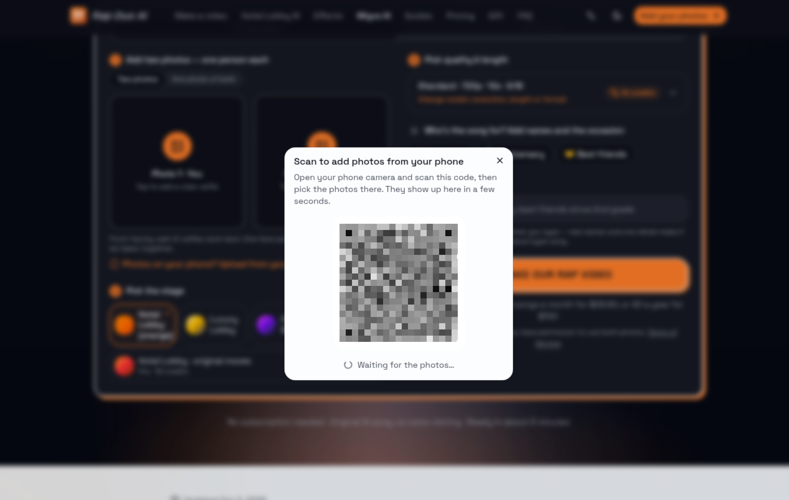

哥飞在群里分享了一个交互：PC 端表单的上传组件旁边，增加「从手机传图」按钮，点击后弹出二维码，用户用手机扫码上传图片，照片直接回填到 PC 端的表单里。
为什么加这个按钮
起因是让 AI 分析「PC 端转化不好」的原因。AI 给出的判断之一是：用户的照片一般存在手机里，而在 PC 端要求上传时，用户得先把照片从手机搬到电脑。与其让用户自己搬运，不如在上传入口处直接提供手机通道。
交互长什么样

截图里的弹窗把这套流程说得很直白：标题是「Scan to add photos from your phone」，正文提示用户用手机相机扫码、在手机上挑选照片，「几秒后会出现在这里」；二维码下方是「Waiting for the photos...」的等待状态。也就是说，手机端选完图后，PC 端不需要再操作一次，照片会直接进入上传区。
可迁移的点
- 上传组件默认按「文件在电脑上」设计，但头像、证件、商品图、装修或宠物照这类素材，本来大多在用户手机里。
- 与其优化 PC 端的文件选择流程，不如在入口处直接开一条手机扫码通道，省掉跨设备搬运这一步。
- 这个判断来自 AI 对转化数据的分析，是否真的提升转化，仍要用自己站点的数据验证。
原始对话
聊天记录（2 条）
参与者 1 人：哥飞 · 时间范围 2026年10月26日 12:40 · 原始 2 条，保留 2 条